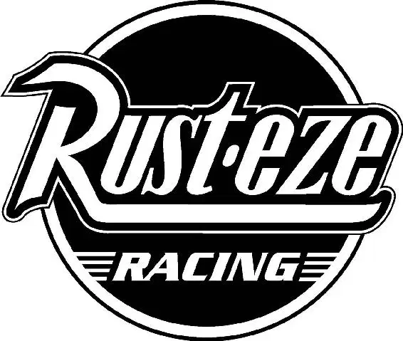

Lightning idled in the infield, dazed. He could hear The King and Chick speeding around the track—but they seemed far away.
“Kid, you all right?” Mack asked over the radio.
Lightning gave himself a shake, trying to clear his head. He knew that he was losing time. He’d never catch up to the other cars now. “Uh, Mack, I don’t know. I don’t think—”
Suddenly, a different—and familiar—voice growled over the radio. “I didn’t come all this way to see you quit.”
Lightning gasped. “Doc?” The rookie peered at pit row, where a crowd of folks were waving. Almost everyone was there—Ramone, Flo, Luigi, Guido, Fillmore, Sarge—even Mater. “Guys!” Lightning cried happily. “You’re here!”
“Hey, it was Doc’s idea, man,” Ramone said.
Lightning looked at the crew chief platform. Doc was there—painted up as the Fabulous Hudson Hornet. He looked glorious. “I knew you needed a crew chief,” Doc rumbled, “but I didn’t know it was this bad.”
“Doc, look at you!” Lightning said in awe. “I thought you said you’d never come back.”
“Well, I really didn’t have a choice,” Doc replied. “Mater didn’t get to say good-bye.”
“Good-bye!” Mater hollered. He looked at Doc. “Okay, I’m good.”
Lightning laughed.
“All right,” Doc said, getting down to business, “if you can drive as good as you can fix a road, then you can win this race with your eyes shut. Now, get back out there.”
In an instant, Lightning tore onto the track. Suddenly, he felt he had the focus of a laser beam. The team from Radiator Springs let out a cheer as he ripped up the asphalt, gaining on Chick and The King.
“We are back in business!” Doc shouted. “Guido, Luigi—you’re going up against professional pit crews, boys. You’re gonna have to be fast.”
“They will not know what hit them!” Luigi promised.
“Kid, you can beat these guys,” Doc said over his headset. “Find the groove that works for you and get those laps back!”
Meanwhile, the monitors showed Lightning’s new crew. “Darrell, it appears Lightning has got himself a pit crew,” Bob said as the cameras zoomed in on Doc, “and look who he has for a crew chief.”
The crowd recognized Doc and began to cheer, welcoming him back.
Bob looked down at pit row in amazement. “Wow, this is history in the making; nobody has seen the racing legend in over fifty years.”
But history was happening on the track, too, as Lightning whipped past Chick and The King.
“Lightning’s coming up fast… He goes three wide and passes them on the inside!” Bob announced excitedly. He couldn’t believe it.
“What?” Chick was shocked as Lightning slid past, making up the first of his two lost laps.
Back in Radiator Springs, Sally, Lizzie, and Red watched Lightning on television.
“C’mon! You got it, Stickers!” Sally exclaimed.
Making up his second lap, Lightning closed in on Chick and The King again.
“Oh,” Chick muttered, “kid’s just trying to be a hero, huh?” With a sudden jerk, Chick knocked Lightning as he started to pass. “Well, what do you think of this?” He sneered as Lightning spun around until he was facing backward.
But Lightning didn’t slow down. He bolted past Chick—in reverse.
“Whoa!” Mater whooped from pit row. “I taught him that. Ka-chow!”
“What a move by Lightning!” Bob cried as he looked down on the race from the booth. “He’s caught up to the leaders!”
“A three-way battle for the lead with ten to go,” Darrell continued.
